FAST GAME в кармане.
Наш VPN-клиент: маскот, профили и управление подключением на одном экране.
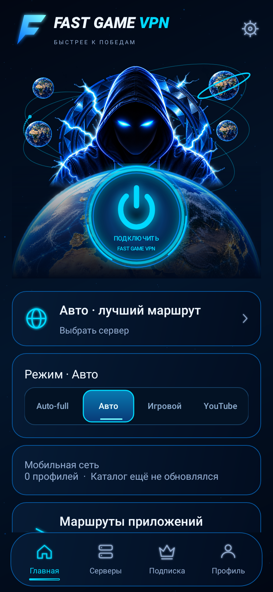
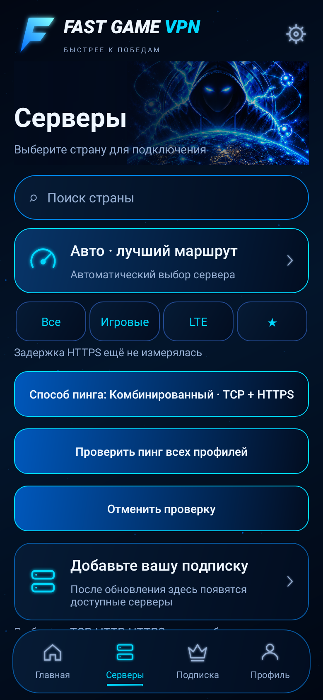
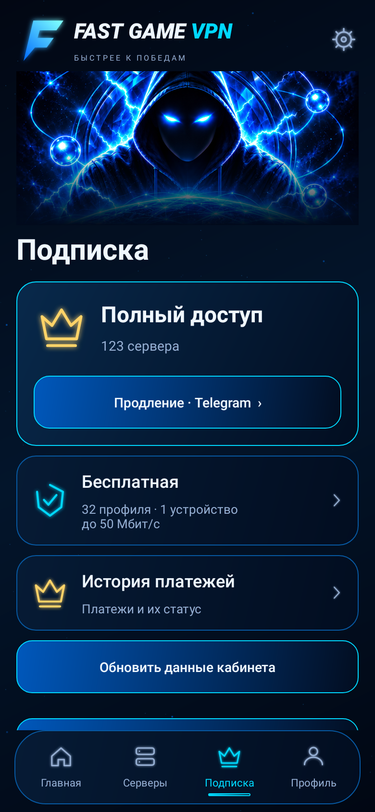
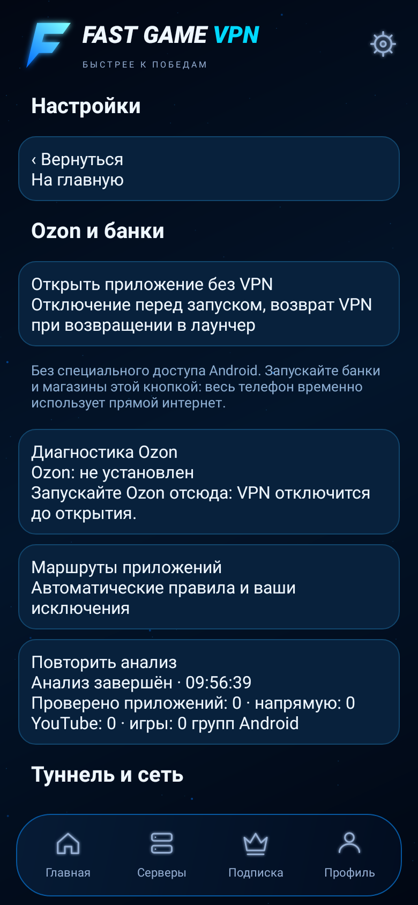
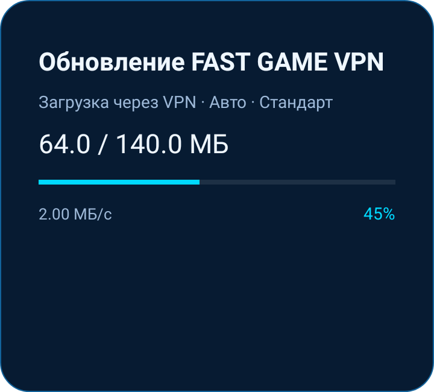
Главная · 1 / 5
VPN для твоей жизни онлайн.
Телефон, компьютер и Telegram — в одной экосистеме.
Каталог по материалам проекта от 2 ноября 2026.
Клиент для подключения, Mini App для управления. Всё на своих местах.
Наш VPN-клиент: маскот, профили и управление подключением на одном экране.





Развиваем собственный клиент для ПК. Пока для подключения на Windows и macOS используй Happ.
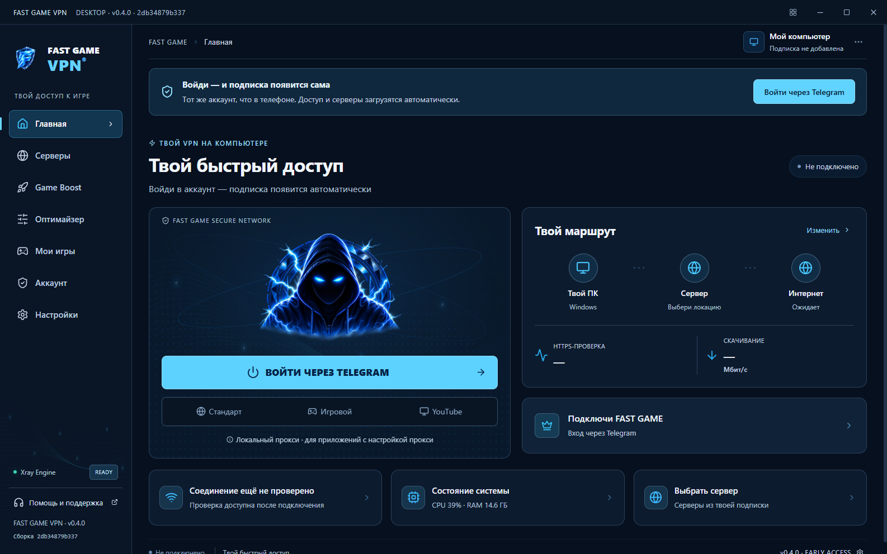
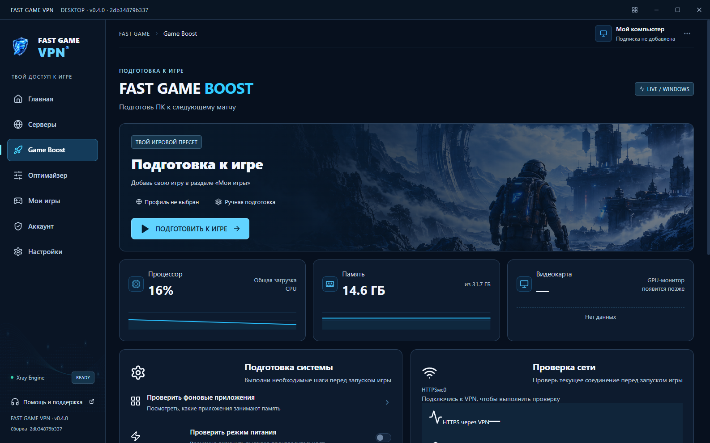
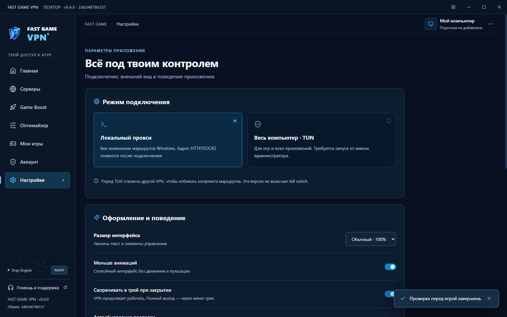
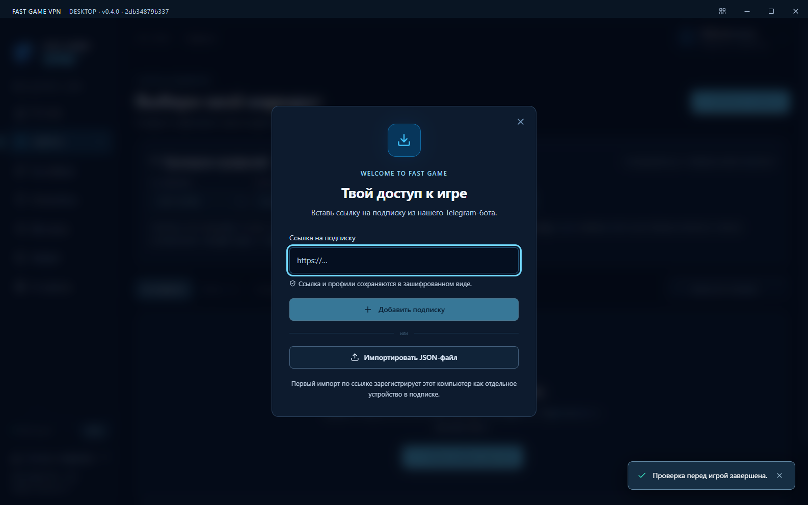
Подписка, устройства и ссылки подключения. Посмотри разделы Mini App: листай экран или выбирай вкладку.
Демонстрационные экраны из проекта. Даты, счётчики и условия на изображениях — примеры; актуальные данные смотри в боте.
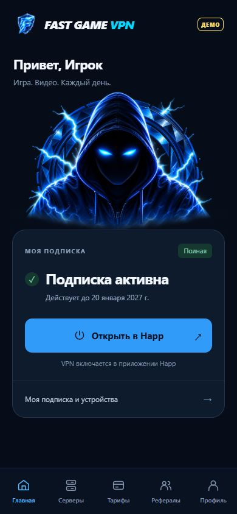
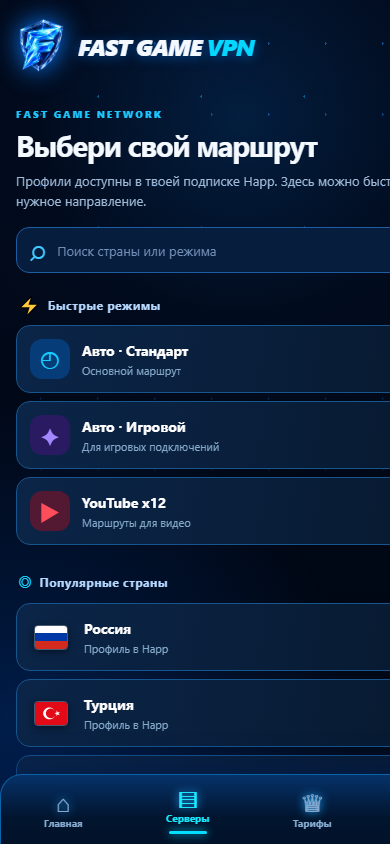
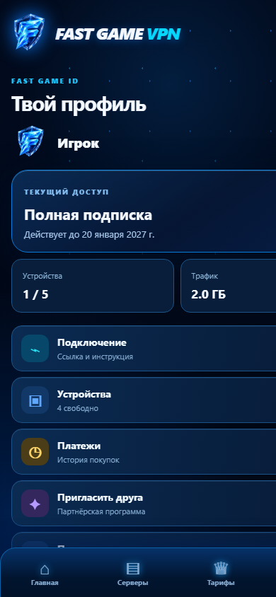
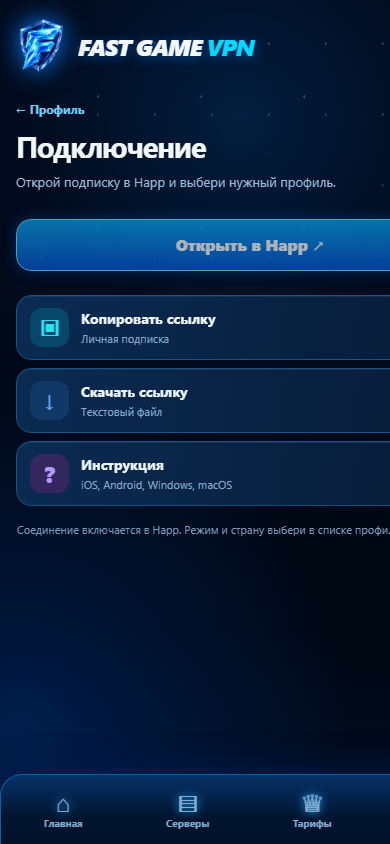
Для iPhone и iPad используется Happ. Экраны приложений показаны из материалов проекта; внешний вид, числа и условия на скриншотах могут отличаться от актуальных.
Выбирай профиль под свою сеть и задачу. Настройки соединения — в приложении.
Начни с Auto или выбери отдельный профиль из подписки. Обновляй список, чтобы получать изменения маршрутов.
В профилях используются современные алгоритмы шифрования и проверка сертификатов для TLS-подключений.
Получай ссылку подписки и управляй доступом в Telegram. Подключай её в подходящем клиенте на своём устройстве.
Скорость и доступность зависят от сети, провайдера и профиля. Снижение игрового пинга и работа каждого маршрута не гарантируются.
Сначала получи подписку в нашем боте. Затем установи приложение и добавь персональную ссылку.
Помощь с подключением ↗Сканируй QR-код телефоном
или открой бота на этом устройстве.
Приложение устанавливается на устройство и включает VPN. Mini App открывается в Telegram и помогает управлять подпиской, устройствами и ссылками.
Актуальные условия, стоимость и продление доступны в Telegram-боте FAST GAME VPN.
Проверь интернет без VPN, обнови подписку и попробуй другой профиль Auto. Если проблема остаётся, напиши в поддержку устройство, приложение, сеть и название профиля. Персональную ссылку и ключи не публикуй.
Да, подключение выполняется через совместимый клиент Happ. Выбери свою платформу в официальном каталоге, затем добавь ссылку подписки FAST GAME VPN.